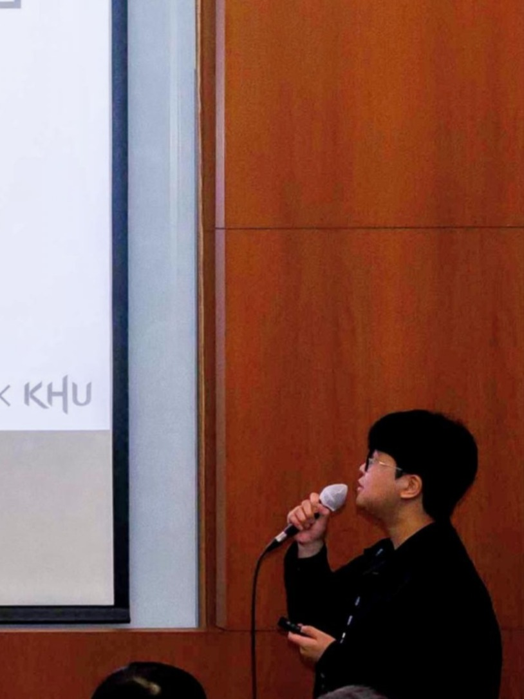
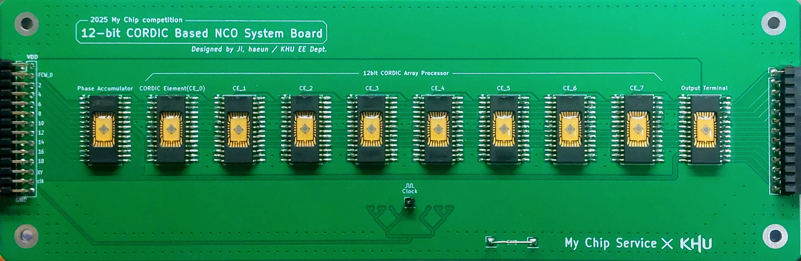
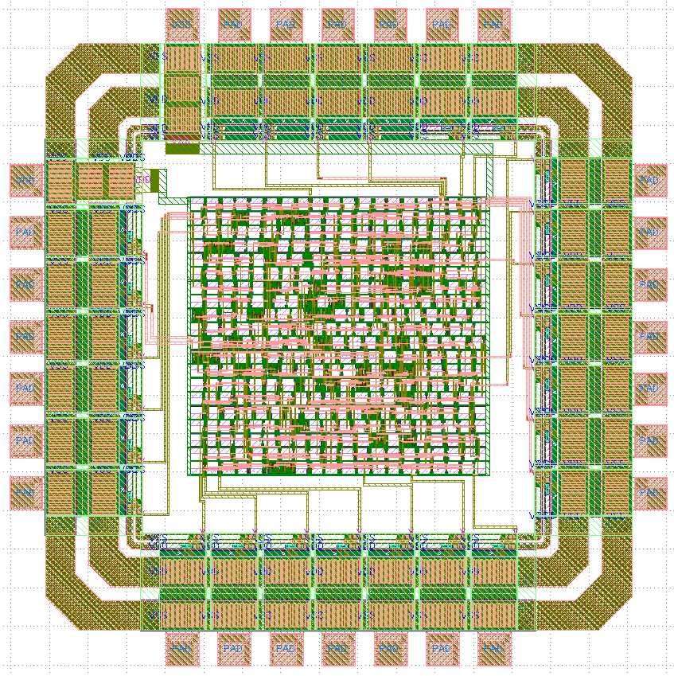
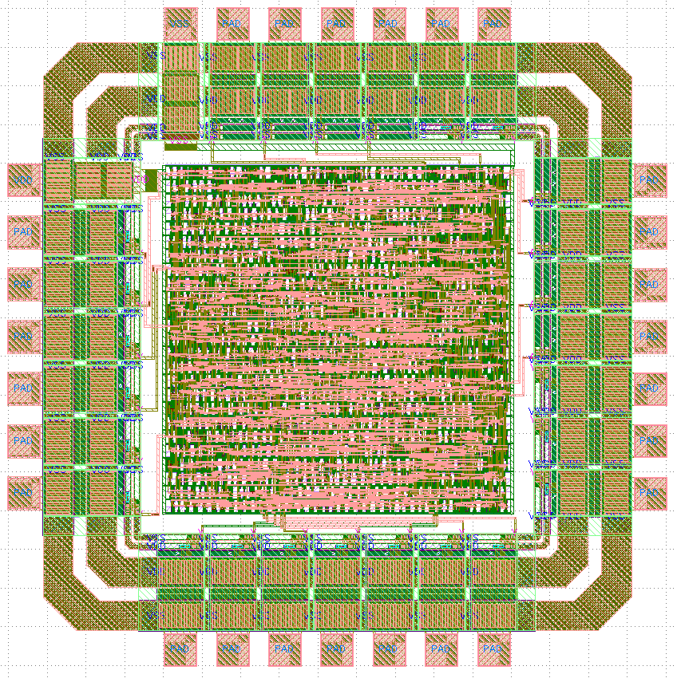
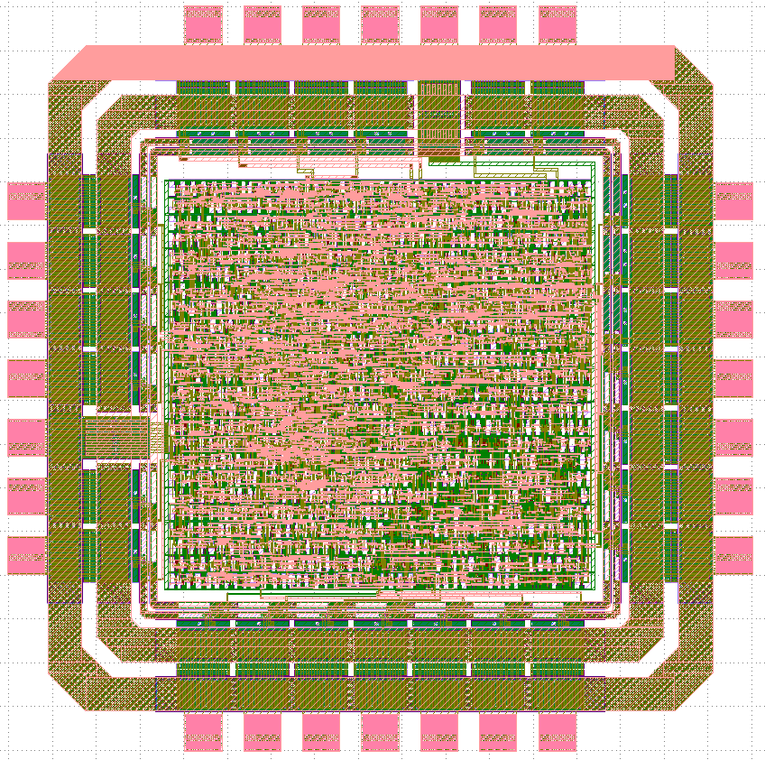

Haeun Ji
About Me

- I am a Research Intern at the Autonomous Robot Intelligence Laboratory (ARIL), Seoul National University.
- My academic background is in Electronic Engineering, with a primary focus on Chip Design using Open-Source EDA.
- My research interests lie in Hardware for Autonomous Robotics and Space Exploration.
Experience & Education
- Seoul National University, Seoul, Korea Research Intern at the ARIL (2025 - Present)
- Kyung Hee University, Yongin, Korea B.S. in Electronic Engineering (2019 - 2025)
Research Interests
- Hardware for Autonomous Robotics and Space Exploration
- Chip Design using Open-Source EDA
Award
- Grand Prize, Minister's Award (Deputy Prime Minister and Minister of Science and ICT) 2025 My Chip Competition, 12-bit CORDIC-based NCO
Extracurricular Activities
-
Chip Design Project #3: 12-bit CORDIC-based NCO (2025 1st My Chip Service)Open-Source EDA-based design, taped out via the My Chip Service. 12-bit CORDIC-based NCO System PCBSub1: Phase AccumulatorSub2: CORDIC Element
 Sub3: Output Terminal
Sub3: Output Terminal -
Chip Design Project #2: 8-bit FIR Processing Element (2024 2nd My Chip Service)Open-Source EDA-based design, taped out via the My Chip Service. FIR Processing Element
- Panelist: 2024 Presidential Town Hall Meeting Selected as a student representative to provide feedback on the "My Chip Service".
- Presenter: 2024 IEIE Summer Conference Presented "ETRI 0.5㎛ Process-based 4-bit Booth's Multiplier Design and Chip Test".
-
Chip Design Project #1: 4-bit Booth's Multiplier (2023 1st My Chip Service)Open-Source EDA-based design, taped out via the My Chip Service.
 Booth's Multiplier
Booth's Multiplier
Contact
- Email: eunhajosu@khu.ac.kr
- GitHub: github.com/khu-haeun
- Blog: dream-ee-master.tistory.com